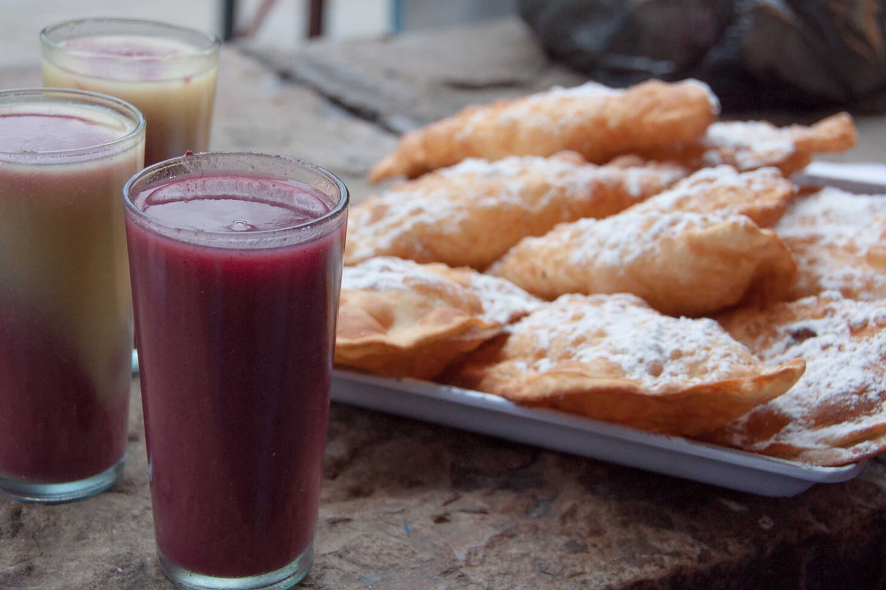

El api no puede faltar en ninguna lista de bebidas típicas de Oruro porque es la más representativa de la ciudad y una de las más consumidas en Bolivia.
Los apis más habituales se preparan con maíz morado o con una combinación de este con el de grano amarillo. Raramente se utiliza maíz blanco.
El api morado es una bebida hecha fundamentalmente a base de maíz morado (lo que le confiere su característico color púrpura), agua, azúcar y canela. No obstante, cada cocinero puede darle su propio toque, por lo que no es infrecuente encontrar api con aroma de anís, o frutas como la piña o la naranja. Otra variante de la misma bebida es el api blanco, hecho con maíz morocho, agua, azúcar y canela.
Sin embargo, bien podemos hablar sobre el proceso para la obtención del mocochinchi. Luego de cosechar el fruto, se lo debe pelar, esto se hace a mano. A continuación, “se lo lleva a secar sobre esteras hechas de caña, que quedan a cargo de una persona responsable para taparlas por la noche con carpas para que no llegue el rocío, mientras que durante el día permanecen descubiertas de cara al sol”.
Lo normal es que el api se beba muy caliente aunque, personalmente, alguna vez he tenido la ocasión de encontrarme con un api blanco servido bien frío. Ambos coinciden en que suelen tomarse acompañados de buñuelos y pasteles, y que su densidad puede hacer que en algunos momentos “comamos” el api, en lugar de beberlo.
Salta a la vista que no es ésta una bebida para tomar todos los días, especialmente si lo que uno quiere es mantener el tipo. No obstante, hay que reconocer que ciudades como La Paz, Oruro, Cochabamba y Potosí no serían las mismas sin los puestos de api repartidos por sus calles y mercados.
|  | Apí |